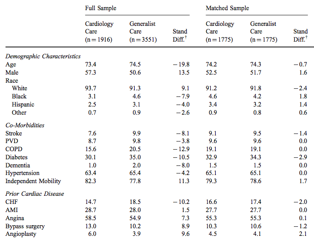
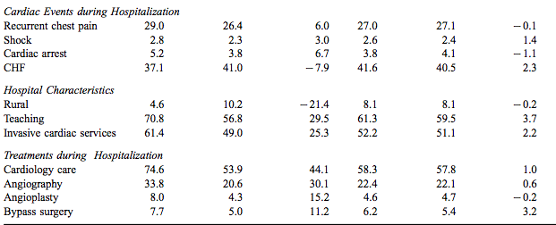
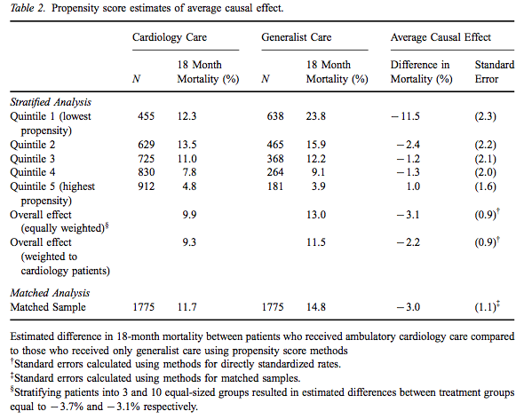
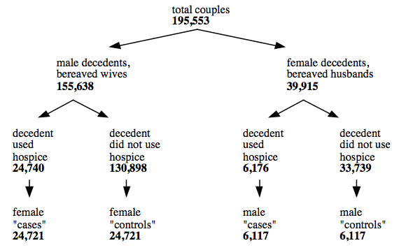
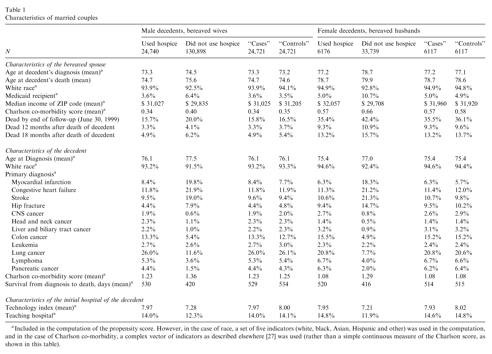
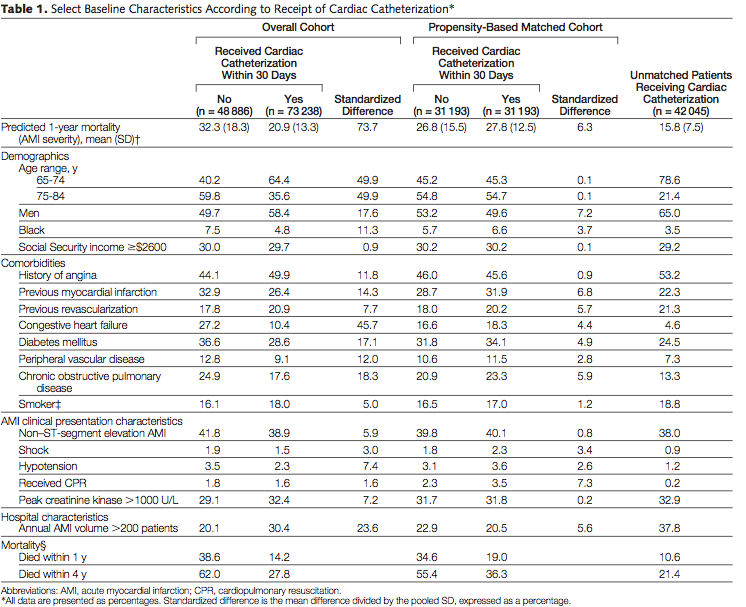
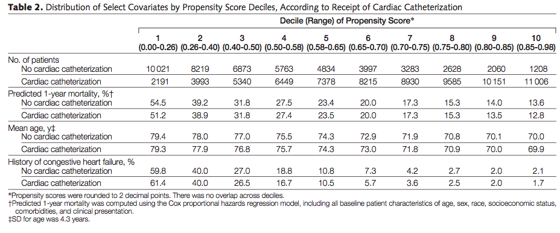
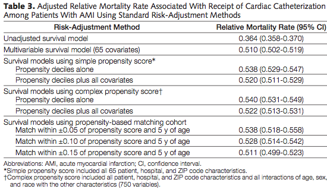

library(DiagrammeR)11 Confounding and causal graphs
11.1 Causal graphs
11.1.1 Graph terminology
In discrete math, a graph is a set of vertices and edges. Edges may be either directed or undirected. Undirected edges can be used to depict connections between nodes without regard to order, such as in a social network where all connections are mutual.
Here’s an undirected graph.
grViz("
digraph {
# Nodes
node [shape = plaintext]
# Edges
edge [color = black,
arrowhead = none]
rankdir = LR
A->B
B->C
C->A
# Graph
graph [overlap = true, fontsize = 6]
}")A cycle is a graph where the edges go in a circle, as here:
grViz("
digraph {
# Nodes
node [shape = plaintext]
# Edges
edge [color = black,
arrowhead = vee]
rankdir = LR
A->B
B->C
C->A
# Graph
graph [overlap = true, fontsize = 6]
}")11.2 Directed acyclic graphs
Epidemiology uses Directed Acyclic Graphs (DAGs). Analysis that preserves the order of events does not use graphs with cycles.
11.2.1 Backdoor paths
The simplest backdoor path is confounding. Here’s a DAG showing confounding:
grViz("
digraph causal {
# Nodes
node [shape = plaintext]
E [label = 'Exposure']
C [label = 'Confounder']
D [label = 'Outcome']
# Edges
edge [color = black,
arrowhead = normal]
rankdir = LR
E->D
C->E
C->D
# Graph
graph [overlap = true, fontsize = 6]
}")11.2.2 Collider
Here’s a graph showing a collider \(A → B ← C\), where both A and B may cause C.
grViz("
digraph {
# Nodes
node [shape = plaintext]
# Edges
edge [color = black,
arrowhead = vee]
rankdir = LR
A->B
C->B
# Graph
graph [overlap = true, fontsize = 6]
}")11.2.3 Mediator
grViz("
digraph causal {
# Nodes
node [shape = plaintext]
E [label = 'Exposure']
M [label = 'Mediator']
D [label = 'Outcome']
# Edges
edge [color = black,
arrowhead = normal]
rankdir = LR
E->M
M->D
E->D
# Graph
graph [overlap = true, fontsize = 6]
}")11.3 Instrumental variables analysis
11.3.1 Instrumental variables definition
Instrumental variables are factors that are associated with the treatment but not the outcome.
grViz("
digraph causal {
# Nodes
node [shape = plaintext]
E [label = 'Exposure']
I [label = 'Instrument']
D [label = 'Outcome']
# Edges
edge [color = black,
arrowhead = normal]
rankdir = LR
E->D
I->E
# Graph
graph [overlap = true, fontsize = 6]
}")11.3.2 Instrumental variables example: Vietnam draft lottery
Quasi experiments for policy evaluation Instrumental variables Ads for military service claim that it gives people skills and opportunities that they can transfer to the civilian sector, and increase their earnings. If we compared people who entered the military voluntarily, they might be self-selected: only people who feel like they have poor job prospects , or people who are more motivated, might enter the military. The Vietnam draft chose birthdays at random, so it’s similar to a randomized experiment, but it’s not a randomlzed experiment. Most of those who fought in Vietnam had volunteered. Men whose lottery numbers were chosen were more likely to enlist, but might not enlist due to occupation or educational defer- ment, poor health, or low test scores: white men of the appropriate ages selected in the lottery were 18 percentage points more likely to enlist, and non-white men were 8.5 percentage points more likely to enlist. Using a technique called instrumental variables — using birthday as an instrument for military enrollment — Josh Angrist found that military service caused 15% lower lifetime earnings. (Josh Angrist, “Lifetime Earnings and the Vietnam Era Draft Lottery: Evidence From Social Security Administrative Records”, American Economic Review, 1990) Many other studies have looked at Vietnam service and other outcomes: e.g., suicide/accident mortality.
Ads for military service claim that it gives people skills and opportunities that they can transfer to the civilian sector, and increase their earnings. If we compared people who entered the military voluntarily, they might be self-selected: only people who feel like they have poor job prospects , or people who are more motivated, might enter the military. The Vietnam draft chose birthdays at random, so it’s similar to a randomized experiment.
Not actually a randomized experiment, though: the majority of those who fought in Vietnam had volunteered. Men whose lottery numbers were chosen were more likely to enlist, but might not enlist due to occupation or educational deferment, poor health, or low test scores: white men of the appropriate ages selected in the lottery were 18 percentage points more likely to enlist, and non-white men were 8.5 percentage points more likely to enlist.
Using a technique called instrumental variables — using birthday as an instrument for military enrollment — Josh Angrist found that military service caused 15% lower lifetime earnings. (Josh Angrist, “Lifetime Earnings and the Vietnam Era Draft Lottery: Evidence From Social Security Administrative Records”, American Economic Review, 1990). Angrist did another study of military enlistment and mortality.
If you were to draw a causal graph, it would look like this:
grViz("
digraph causal {
# Nodes
node [shape = plaintext]
E [label = 'Military enlistment']
I [label = 'Birth date']
D [label = 'Mortality']
# Edges
edge [color = black,
arrowhead = normal]
rankdir = LR
E->D
I->E
# Graph
graph [overlap = true, fontsize = 6]
}")Why is birthday an instrument for the effect of military service on mortality?
11.3.3 Example: Distance to hospital and health outcomes
Distance to hospitals or health care facilities with certain characteristics is a common instrument in many cases:
Distance to nearest hospital with cardiac catheterization used as an instrument to study the effect of intensive treatment on acute myocardial infarction compared with less invasive treatment. (McClellan M, McNeil BJ, Newhouse JP. Does more intensive treatment of acute myocardial infarction in the elderly reduce mortality? Analysis using instrumental variables. JAMA. 1994 Sep 21;272(11):859-66.)
grViz("
digraph causal {
# Nodes
node [shape = plaintext]
E [label = 'Cardiac catheterization']
I [label = 'Distance to nearest hospital with catheterizaation']
D [label = 'Mortality']
# Edges
edge [color = black,
arrowhead = normal]
rankdir = LR
E->D
I->E
# Graph
graph [overlap = true, fontsize = 6]
}")Why is distance to the nearest hospital with cardiac catheterization an instrument for the effect of cardiac catheterization on mortality after AMI?
Another example: Distance to continuing care retirement communities used as an instrument to study whether these retirement communities provide higher quality. (John R. Bowblis, Heather S. McHone, An instrumental variables approach to post-acute care nursing home quality: Is there a dime’s worth of evidence that continuing care retirement communities provide higher quality? Journal of Health Economics Volume 32, Issue 5, September 2013, Pages 980–996)
Another example: Distance to Cedars-Sinai Hospital in LA to estimate hospital quality of pneumonia care in S California. (Estimating the quality of care in hospitals using instrumental variables. Journal of Health Economics, Volume 18, Issue 6, December 1999, Pages 747-767 Gautam Gowrisankaran, Robert J. Town)
11.3.4 Causal graphs resources
For more about causal graphs, see the following resources presented in no particular order: • http://dagitty.net/
• https://cran.r-project.org/web/packages/ggdag/vignettes/intro-to-dags.html
• Morgan and Winship, Counterfactuals and Causal Inference, 2nd edition, Cambridge University Press.
• Modern Epidemiology, 4th edition.
• Coursera course: https://www.coursera.org/lecture/crash-course-in-causality/causal-graphs
11.4 Propensity score matching methods
Propensity score matching methods simulate a randomized experiment within observational data by balancing two or more groups on all important observed factors other than the factor of interest. Propensity score matching methods can also be used to fix a randomized experiment with severe flaws, such as if many participants did not adhere to their assigned treatment or dropped out. Propensity score matching methods are a family of over a dozen methods, including:
Propensity score stratification: make quintiles by propensity score, and compute treatment effect within each quintile.
Nearest-neighbor propensity score matching
Nearest neighbor matching on several variables, often within propensity score calipers, using exact matching and distance matching with the Mahanobis (correlation-adjusted) distance measure
Exact matching: often not possible but it is possible with large datasets like all US birth certificates.
Coarsened exact matching (CEM)
Statistical research finds that there is no single superior matched sampling method, and there is also no way to know in advance which method to use. The best matching method is the one that balances the treatment and control groups, and allows you to compare them without concern about confounding on the specified variables.
Further reading: Gelman and Hill, Data Analysis using regression and multilevel/hierarchical models Rubin “Estimating causal effects from large data sets using propensity scores” Annals of Internal Medicine 1997; 127(8):757–63 Morgan and Winship, Counterfactuals and causal inference: Methods and principles for social research MatchIt software can implement the above methods.
11.4.1 Example: Cardiologists and generalists: who provides better care?
“Causal Effect of Ambulatory Specialty Care on Mortality Following Myocardial Infarction: A Comparison of Propensity Score and Instrumental Variable Analyses.” Specialists charge more than generalists. Are the extra costs worth it?
This paper evaluated whether the type of cardiology care impacted survival from heart attacks. They compared the groups under care of cardiologists versus generalists, and created a comparison group of those treated by generalists such that the two groups were similar.


Can you identify potential confounders in the full sample (first three columns of this table)? That is, what are some differences between the patient groups treated by cardiologists versus generalists that might impact survival?
Did the matching procedure address some of your concerns?
They predicted who was most likely to be treated by a cardiologist and divided the groups into quintiles. The lowest propensity score were predicted to have the lowest probability of being treated by a cardiologist: based on the above table, what characteristics are most true of the lowest propensity score quintile?
Then they estimated the mortality rate in each quintile. Which group in each quintile had lower mortality rates? Which patients does treatment by cardiologists appear to make the biggest difference? Overall, do patients seeing cardiologists have lower mortality rates than patients seeing generalists, after matching?

11.4.2 Example: Hospice and surviving relative
Nicholas A. Christakis, Theodore J. Iwashyna. The health impact of health care on families: a matched cohort study of hospice use by decedents and mortality outcomes in surviving, widowed spouses. Social Science & Medicine 57 (2003) 465–475.
Study of 195,553 elderly couples, of whom 30,838 used hospice. Data is extracted from Medicare claims data, and they named their dataset Care after the Onset of Serious Illness (COSI). COSI has 1.2 million patients diagnosed in 1993 with 13 leading causes of death.
Used propensity score matching to identify 30,838 similar elderly couples who did not use hospice. Diagram misuses terms cases and controls.

Matching variables were determinants of hospice use from the literature. They used a separate propensity score model for men and women but the same covariates.
Decedents’ attributes: age, race, Medicaid, average income in zip code, diagnosis, comor- bidity score, duration
hospital attributes: technology available and teaching hospital status
The researchers checked the match of the adequacy of the model using a “recommended method of testing for differences in covariates” between the groups (hospice vs. non-hospice bereaved spouses, stratifying by quintiles of estimated propensity score. They did not display the balance of the groups, and they did not explain this method, other than citing a paper (Rosenbaum and Rubin 1984.) They give a table comparing the characteristics before and after matching.
They used exact matching on gender and nearest-neighbor estimated propensity score (within 0.005 on scale of 0–1). The procedure identifed matches for 99.92% of surviving wives and 99.04% of surviving husbands.

After matching, the researchers evaluated the outcomes for the bereaved spouses of people who used hospice versus matched bereaved spouses of people who did not use hospice.
| Hospice (n=30,838) | No hospice (n=30,838) | Odds ratio | |
|---|---|---|---|
| Wife died within 18 months | 4.9 | 5.4 | 0.92 (0.84, 0.99) |
| Husband died within 18 months | 13.2 | 13.7 | 0.95 (0.84, 1.06) |
11.4.3 Example: Evaluation of cardiac catheterization
“Analysis of Observational Studies in the Presence of Treatment Selection Bias: Effects of Inva- sive Cardiac Management on AMI Survival Using Propensity Score and Instrumental Variable Methods”
This study evaluates whether receipt of invasive cardiac care (cardiac catheterization) predicts mortality over 1 and 4 years. As before, they looked at differences between those receiving cardiac catheterization and less invasive care in their full sample.

Can you identify potential confounders in the full sample (first three columns of this table)? That is, what are some differences between the patient groups who received cardiac catheterization within 30 days versus not that might impact survival? Did the matching procedure address some of your concerns?
This table shows the distribution of certain variables by propensity score decile.

How can you summarize the characteristics of those most likely versus least likely to receive cardiac catheterization?

Does the method of data analysis impact whether cardiac catheterization appears to reduce mortality?
11.5 Exercise
This exercise is based on the paper “Vegetarian Dietary Patterns and Mortality in Adventist Health Study 2.” JAMA Internal Medicine, June 3, 2013, available here (free to public): http://archinte.jamanetwork.com/article.aspx?articleid=1710093
What type of study is this?
What is the research question?
What is the primary predictor of interest in this study? Define it briefly. If categorical or dichotomous, list the categories of the variable.
Which are the primary outcome(s) in this study?
Looking at Table 2, identify some potential confounders of the relationship between the predictor and the outcome(s)? Explain in detail how that variable could cause a spurious connection between vegetarianism and lower mortality.
Which data analysis methods do the researchers use to adjust for confounding?
Do you observe any effect modifiers in this study? List the potential effect modifiers and the relationships that they modify. How did you identify them?